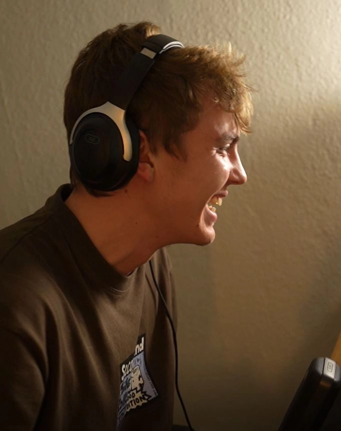
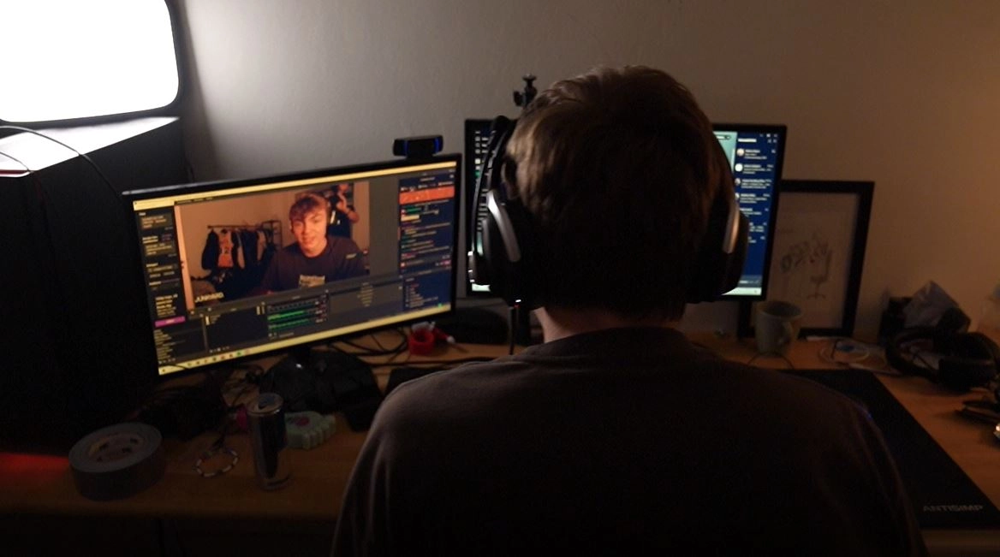
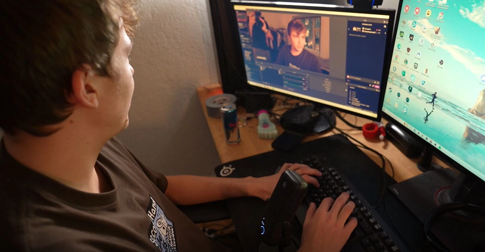

Det danske Twitch-håb, Rasmus Søndergaard,
fortæller hvordan streaming er vejen til lykke, men åbner også op om bagsiden, der lurer bag skærmen.



Info
- Instruktøre & fotografer
- Jonatan & Anahita
- Klipper
- Anahita
- Medvirkende
- Rasmus Søndergaard
- Spilletid
- 00:01:04